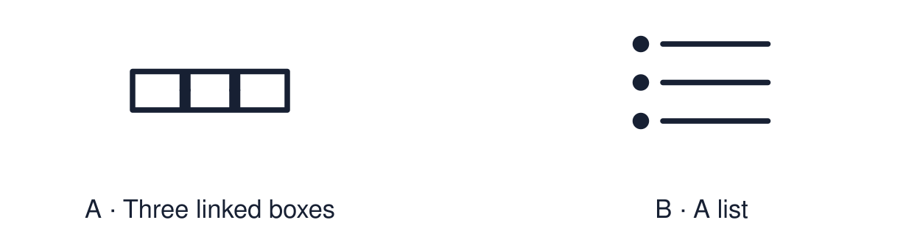

Arrival choices
Previous lesson reminder:

Start with 1 and 2. Try 3 and 4 when ready. Reading and exact scribing are available.
1 Name two different worldviews found in Britain.
Support: Use the reminder strip or talk it through with an adult.
2 Which meaning fits identity?
Support: Choose: Who a person is and how they see themselves OR To have an effect on something.
3 What value does Imran’s belief lead to?
Support: Use the model evidence anchor A or read one relevant card together.
4 Is belief the only thing that shapes identity?
Support: Give a reason when ready.
Stretch: use a precise example or explain which detail supports your answer.
Evidence cards
Read, point or listen. Keep the source label with any detail you use.
A Imran’s chain
Fictional profile: Imran believes that God asks people to care for those in need. So he values generosity. So he chooses to help at the food bank each week.
Source: Authored profile
Limit: This is one person's view. Others who share the worldview may describe it differently.
B Ellie’s chain
Fictional profile: Ellie believes this is the one life we have. So she values making a difference now. So she chooses to join a litter pick.
Source: Authored profile
Limit: This is one person's view. Others who share the worldview may describe it differently.
C What shapes identity
Family, friends, place, interests, culture and beliefs can all shape identity. Belief is one influence among many.
Source: Authored classroom resource
Limit: Belief does not fully decide who someone is.
D The chain
Belief → value → choice. Ask: what does the person believe? What do they care about because of it? What do they do?
Source: Authored classroom resource
Limit: Real lives are less tidy than a three-step chain.
Shared investigation
1. Decide whether each statement is a belief, a value or a choice.
2. Highlight the clue that links one step to the next.
Work with a partner or adult, or use your own table. One person suggests; the other checks the evidence. Swap after one turn. Passing is allowed.
Move or match the cards
| Cards to use |
|---|
| Helps at the food bank each week |
| Generosity matters to him |
| “God asks people to care for those in need.” |
Possible labels: Belief / Choice / Value
Support: Read one evidence card together. Highlight a useful detail. Rehearse with: Belief can shape identity by ___.
Further challenge: Explain why two people with the same belief might make different choices.
Supported independent task
Complete this route only. Describe one way beliefs can shape a person's identity.
1. Choose one profile: Imran or Ellie.
2. Put the three chain cards in order: belief, value, choice.
3. Say or finish: Belief can shape identity by ___.
Support: Read one evidence card together. Highlight a useful detail. Rehearse with: Belief can shape identity by ___. Complete the organiser one space at a time. Belief can shape identity by ___.
An adult may read or scribe your exact response. They should not choose the answer.
Standard independent task
Complete this route only. Describe one way beliefs can shape a person's identity.
1. Choose one profile.
2. Complete the chain: belief → value → choice.
3. Explain one link using the word “so”.
Support: Belief can shape identity by ___.
Check the required evidence and revise one detail.
Stretch independent task
Complete this route only. Describe one way beliefs can shape a person's identity.
1. Complete the chain for both profiles.
2. Explain one similarity between the two chains.
3. Name one other influence on identity and say how it could change the choice.
Support: Choose the evidence independently. Use the frame only if it helps.
Explain why two people with the same belief might make different choices.
Exit ticket
Choose a response mode. You may give your answers privately to an adult.
What value does Imran’s belief lead to?
Is belief the only thing that shapes identity?
Support: Belief can shape identity by ___.
Further challenge: Explain why two people with the same belief might make different choices.